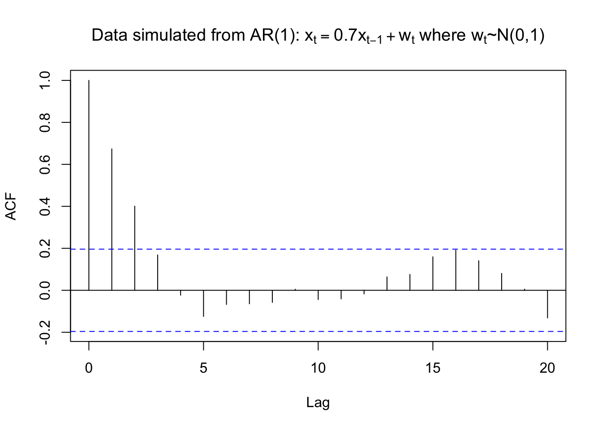

Chapter 14 Estimation
Estimate the parameters (\(\phi\)’s, \(\theta\)’s, \(\mu\), and \(\sigma_w^2\)) of an ARIMA model. Hat notation (^) is placed above parameters to denote estimated quantities.
14.1 Method of moments estimates
Sample moments (for example, the sample mean, sample variance,…) are substituted for their corresponding population counterparts to find parameter estimates.
Example 14.1 Exponential(\(\theta\))
Let \(X_1, …, X_n \sim ind. Exponential(\theta)\) i.e. \(f(x)=\theta e^{-\theta x}\) for 0 < x < \(\infty\).
One can show that \(\mu = E(X) = 1/\theta\). This implies that \(\theta = 1/\mu\). Let \(\bar{X}\) denote the sample mean. Then \(\hat{\theta}=\frac{1}{\bar{X}}\).
In deriving the PACF, we examined an autoregressive representation of \[x_t=\phi_1x_{t-1}+\phi_2x_{t-2}+...+\phi_px_{t-p}+w_t\]
where \(w_t \sim ind.(0,\sigma_w^2)\)
This led to
\[\rho(1)=\phi_1\rho(0)+\phi_2\rho(1)+...+\phi_p\rho(p-1)\\ \rho(2)=\phi_1\rho(1)+\phi_2\rho(0)+...+\phi_p\rho(p-2)\\ ...\\ \rho(p)=\phi_1\rho(p-1)+\phi_2\rho(p-2)+...+\phi_p\rho(0)\]
Note: These are called the Yule-Walker equations.
For a specific p, we can solve the \(\phi\)’s:
Note that of course \(\rho(0)=1\)
Suppose p = 1, then \[\rho(1)=\phi_1\rho(0)\implies \phi_1=\rho(1)\implies \hat{\phi_1}=\hat{\rho}(1)\]
Suppose p = 2, then \[\phi_1=\frac{\rho(1)[1-\rho(2)]}{1-\rho(1)^2},\\ \phi_2=\frac{\rho(2)-\rho(1)^2}{1-\rho(1)^2}\] \[\implies \hat{\phi_1}=\frac{\hat{\rho}(1)[1-\hat{\rho}(2)]}{1-\hat{\rho}(1)^2}, \hat{\phi}_2=\frac{\hat{\rho}(2)-\hat{\rho}(1)^2}{1-\hat{\rho}(1)^2}\]
In addition, \(\hat{\sigma}_w^2=\hat{\gamma}(0)[1-\hat{\phi}_1\hat{\rho}(1)-...-\hat{\phi}_p\hat{\rho}(p)]\) where the estimate of \(\sigma_w^2\) results from:
\[\gamma(0)=E(x_tx_t)=E[x_t(\phi_1x_{t-1}+\phi_2x_{t-2}+...+\phi_px_{t-p}+w_t)]\\ =E[\phi_1x_tx_{t-1}+\phi_2x_tx_{t-2}+...+\phi_px_tx_{t-p}+x_tw_t]\\ =\phi_1E(x_tx_{t-1})+\phi_2E(x_tx_{t-2})+...+\phi_pE(x_tx_{t-p})+E(x_tw_t)\\ =\phi_1\gamma(1)+\phi_2\gamma(2)+...+\phi_p\gamma(p)+\sigma_w^2\]
Note that \(E(x_tw_t)=E[(\phi_1x_{t-1}+...+\phi_px_{t-p}+w_t)w_t]=E(w_t^2)=\sigma_w^2\)
\[\implies \sigma_w^2=\gamma(0)-\phi_1\gamma(1)-\phi_2\gamma(2)-...-\phi_p\gamma(p)\\ \implies \sigma_w^2=\gamma(0)(1-\phi_1\rho(1)-\phi_2\rho(2)-...-\phi_p\rho(p))\\ \implies \hat{\sigma}_w^2=\hat{\gamma}(0)(1-\hat{\phi}_1\hat{\rho}(1)-\hat{\phi}_2\hat{\rho}(2)-...-\hat{\phi}_p\hat{\rho}(p))\]
Suppose \(E(x_t) = \mu \ne 0\). Then \(\hat{\mu}=\bar{x}\) and \(\hat{\alpha}=\hat{\mu}(1-\hat{\phi}_1-...-\hat{\phi}_p)\).
Example 14.2 AR(1) with \(\phi_1=0.7\), \(\mu=0\), and \(\sigma_w^2=1\) (fit_AR1.R)
Data was simulated from an AR(1) model of the form \(x_t = 0.7x_{t-1} + w_t\) where \(w_t \sim ind.N(0,1).\)
ar1 <- read.table(file = "AR1.0.7.txt", header = TRUE, sep = "")
head(ar1)## t x
## 1 1 0.0417268
## 2 2 0.3719068
## 3 3 -0.1854518
## 4 4 -1.3829742
## 5 5 -2.8759365
## 6 6 -2.6001761x <- ar1$xThe data is in x.
# dev.new(width = 8, height = 6, pointsize = 10) #Opens up wider plot window than the default (good for time series plots)
plot(x = x, ylab = expression(x[t]), xlab = "t", type = "l", col = "red", lwd = 1 ,
main = expression(paste("Data simulated from AR(1): ", x[t] == 0.7*x[t-1] + w[t], " where ", w[t], "~N(0,1)")) ,
panel.first=grid(col = "gray", lty = "dotted"))
points(x = x, pch = 20, col = "blue")rho.x <- acf(x = x, type = "correlation", main =
expression(paste("Data simulated from AR(1): ", x[t] == 0.7*x[t-1] + w[t], " where ", w[t], "~N(0,1)")))
rho.x##
## Autocorrelations of series 'x', by lag
##
## 0 1 2 3 4 5 6 7 8 9 10
## 1.000 0.674 0.401 0.169 -0.023 -0.125 -0.067 -0.064 -0.058 0.005 -0.044
## 11 12 13 14 15 16 17 18 19 20
## -0.041 -0.017 0.064 0.076 0.160 0.191 0.141 0.081 0.006 -0.132gamma.x <- acf(x = x, type = "covariance", main =
expression(paste("Data simulated from AR(1): ",
x[t] == 0.7*x[t-1] + w[t], " where ", w[t], "~N(0,1)")))
gamma.x##
## Autocovariances of series 'x', by lag
##
## 0 1 2 3 4 5 6 7 8 9
## 2.5033 1.6864 1.0036 0.4219 -0.0586 -0.3120 -0.1687 -0.1608 -0.1445 0.0133
## 10 11 12 13 14 15 16 17 18 19
## -0.1102 -0.1029 -0.0430 0.1599 0.1892 0.3997 0.4790 0.3529 0.2015 0.0140
## 20
## -0.3293mean(x)## [1] -0.4963419Therefore, \(\hat{\gamma}(0)= 2.5033\), \(\hat{\rho}(1)= 0.6737\), and \(\bar{x}= -0.4963\). From the previous derivation, note that \(\hat{\phi_1}=\hat{\rho}(1)\) . Thus, the estimated model can be written as \((1 -\hat{\phi}_1B)x_t = \hat{\alpha}+ w_t\) where \(w_t \sim ind.(0,\sigma_w^2)\)
\(\implies (1-0.6437B)x_t=-0.16+w_t\) where \(w_t \sim ind.N(0,1.3671)\)
\(\hat{\sigma}_w^2=\hat{\gamma}(0)[1-\hat\phi_1\rho(1)]=2.5033[1-(0.6737)^2]=1.3671\)
Note: We would use \(\hat\mu=-0.4963\) if we believed that \(E(x_t) \ne 0\). In most applications, you will not know it is 0! I included here using \(\hat\alpha=\hat\mu(1-\hat\phi_1)\) .
Compare the estimates to the actual \(\phi_1 = 0.7\), \(\mu = 0\), and \(\sigma_w^2= 1\) used to generate the data.
Example 14.3 MA(1)
Remember that \(\rho(1)=\frac{\theta_1}{1+\theta_1^2}\). Then this equation can be solved for \(\theta_1\). Substituting estimates for the parameters produces:
\[\hat\theta_1=\frac{1\pm \sqrt{1-4\hat\rho(1)^2}}{2\hat\rho(1)}\]
from the quadratic formula which gives two different solutions. Choose the solution that satisfies the invertibility condition (i.e., -1 < \(\theta_1\) < 1).
Suppose \(|\hat\rho(1)| > 0.5\). Then an estimate cannot be found!
From earlier in the course, \(\gamma(0)=\sigma_w^2(1+\theta_1^2)\) . Therefore, \(\hat\sigma_w^2=\frac{\hat\gamma(0)}{1+\hat\theta_1^2}\)
Notes:
- We do not NEED to assume that \(w_t\) has a normal distribution!
- Method of moment estimators usually are not used as “final” estimates for the parameters. Instead, they are often used as initial estimates for iterative parameter estimating procedures.
- Estimates for AR only models are “optimal”. Estimates for models containing MA parameters are not “optimal”. Optimal here refers to having smallest variance.
- The R function,
ar(), will do the Yule-Walker estimation method for autoregressive models (seemethod = "yule-walker"argument). It uses Akaike’s information criterion to choose a “best” model.
14.2 Maximum Likelihood
Parameter estimation for ARIMA models
- Method of moments
- Unconditional least squares (ULS)
- Conditional least squares (CLS)
- Maximum likelihood estimation (MLE)
Notes:
- Method of moments can provide initial estimates for iterative procedures
- ULS, CLS, and MLE are iterative methods
- ULS and CLS are approximations to MLE
- Which estimation method to use? From Box, Jenkins, and Reinsel’s textbook:
Generally, the conditional and unconditional least squares estimators serve as satisfactory approximations to the maximum likelihood estimator for large sample sizes. However, simulation evidence suggests a preference for the maximum likelihood estimator for small or moderate sample sizes, especially if the moving average operator has a root close to the boundary of the invertibility region.
14.3 Likelihood function
If you need a review of maximum likelihood estimation, please see my separate videos and notes from a mathematical statistics course. These notes show mathematical derivations for a few examples and show how to use Sage (a symbolic mathematical software package) to perform these derivations as well.
Consider the following ARMA(p,q) model.
\(x_t-\phi_1x_{t-1}-..-\phi_px_{t-p}=w_t+\theta_1w_{t-1}+...+\theta_qw_{t-q},\) where \(w_t \sim ind. N(0, \sigma_w^2)\) for t=1,…,n
Comments:
- If we had an ARIMA model instead, let \(x_t = (1-B)^dv_t\) for a nonstationary in the mean process \(v_t\).
- The normal distribution assumption is needed for these maximum likelihood estimation methods.
- If we do not assume \(E(x_t) = \mu = 0\), then
\[(x_t-\mu)-\phi_1(x_{t-1}-\mu)-...-\phi_p(x_{t-p}-\mu)=\\ w_t+\theta_1w_{t-1}+...+\theta_qw_{t-q}\\ \implies x_t-\phi_1x_{t-1}-...-\phi_px_{t-p}=\alpha+w_t+\theta_1w_{t-1}+...+\theta_qw_{t-q}\] with \(\alpha=\mu(1-\phi_1-...-\phi_p)\)
This can be rewritten as
\[w_t=x_t-\phi_1x_{t-1}-...-\phi_px_{t-p}-\theta_1w_{t-1}-..-\theta_qw_{t-q}-\alpha\] Conditional on past \(x_t\) values, the likelihood can then be written in the form
\[L(\boldsymbol \phi,\boldsymbol \theta, \mu, \sigma_w^2|\boldsymbol w)=\prod_{t=1}^{n}\frac{1}{\sqrt{2\pi}\sigma_w}e^{-\frac{w_t^2}{2\sigma_w^2}}=\frac{1}{(2\pi)^{n/2}\sigma_w^n}e^{-\frac{\sum w_t^2}{2\sigma_w^2}}\]
where \(\boldsymbol w=(w_1,...,w_n)', \boldsymbol \phi=(\phi_1,...,\phi_p)', \boldsymbol \theta=(\theta_1,...,\theta_q)'\) are vectors of parameters. Additional details are provided in Shumway and Stoffer’s section on estimation.
The log likelihood function can be found by \(\mathcal l(\boldsymbol \phi,\boldsymbol \theta,\mu,\sigma_w^2 |\boldsymbol w) = log[L(\boldsymbol \phi,\boldsymbol \theta, \mu, \sigma_w^2|\boldsymbol w)]\). Values of the parameters that maximize this equation are the maximum likelihood estimates (MLEs).
To find parameter estimates, iterative numerical methods must be used to find these estimates. A common method often used is the Newton-Raphson method.
14.4 Newton-Raphson method
Let \((\phi_1, …, \phi_p, \theta_1, …, \theta_q,\sigma_w^2,\mu)'\) be rewritten as a vector of \(\beta\)’s: \(\boldsymbol \beta= (\beta_1,…,\beta_k)'\) where k = p + q + 2.
Let \(\frac{\partial \mathcal l(\boldsymbol \beta) }{\partial \beta_i}\) denote the first partial derivative taken with respect to \(\beta_i\). Let \(\mathcal l^{(1)}(\boldsymbol \beta)= (\frac{\partial \mathcal l(\boldsymbol \beta) }{\partial \beta_1},..., \frac{\partial \mathcal l(\boldsymbol \beta) }{\partial \beta_k})\) be a k x 1 vector of these first partial derivatives.
Let \(\frac{\partial^2 \mathcal l (\boldsymbol \beta)}{\partial \beta_i \partial \beta_j}\) be the second partial derivative taken with respect to \(\beta_i\) and \(\beta_j\). Let \(\mathcal l^{(2)}(\boldsymbol \beta)\) be a k x k matrix of these second partial derivatives and assume it is nonsingular. This matrix is often referred to as a “Hessian” matrix.
Iterative estimates of \(\boldsymbol \beta\) can be found using the following equation:
\[\boldsymbol{\hat{\beta}}_{(g)}=\boldsymbol{\hat{\beta}}_{(g-1)}-[\mathcal l^{(2)}(\boldsymbol{\hat{\beta}}_{(g-1)})]^{-1}\mathcal l^{(1)}(\boldsymbol{\hat{\beta}}_{(g-1)})\] for g=1,2,…
Remember that \(\boldsymbol{\hat{\beta}}_{(g)}\) is a k x 1 vector. The iteration process stops when these \(\boldsymbol{\hat{\beta}}_{(g)}\)’s converge to \(\boldsymbol{\hat{\beta}}\). This is said to happen when \(|\boldsymbol{\hat{\beta}}_{(g)}-\boldsymbol{\hat{\beta}}_{(g-1)}|< \epsilon\) for some small number \(\epsilon\) > 0 (there are other definitions of convergence).
14.5 Covariance matrix for the estimators
The covariance matrix is \(-[\mathcal l^{(2)}(\boldsymbol{\hat{\beta}})]^{-1}\) (inverse of the observed Fisher information matrix). The estimated covariance matrix will have the form \[\begin{bmatrix} \hat Var(\hat\beta_1) & \hat Cov(\hat\beta_1,\hat\beta_2) &\dots & \hat Cov(\hat\beta_1\hat\beta_k) \\ \hat Cov(\hat\beta_1,\hat\beta_2) & \hat Var(\hat\beta_2) &\dots & \hat Cov(\hat\beta_2\hat\beta_k)\\ \vdots & \vdots & \ddots & \vdots\\ \hat Cov(\hat\beta_1\hat\beta_k) & \hat Cov(\hat\beta_2,\hat\beta_k) &\dots & \hat Var(\hat\beta_k) \end{bmatrix}\]
Let \(\hat{\boldsymbol{\beta}}\) be a vector of the maximum likelihood estimators. Then \(\hat{\boldsymbol{\beta}}\) is approximately distributed as \(N(\hat{\boldsymbol{\beta}}, -[\mathcal l^{(2)}(\boldsymbol{\hat{\beta}})]^{-1})\) for large n. See Ferguson’s textbook “A Course in Large Sample Theory” for more information on “standard” maximum likelihood techniques.
Note that hypothesis tests for \(H_0:\beta_i = \beta_{i0}\) can be done using a Wald statistic: \[Z=\frac{\hat \beta_i- \beta_{i0}}{\sqrt{\hat Var(\hat \beta_i)}}\]
where \(\hat Var(\hat \beta_i)\) can be found from the \(i^{th}\) diagonal element of \(-[\mathcal l^{(2)}(\boldsymbol{\hat{\beta}})]^{-1}\) and Z has an approximate N(0,1) distribution for a large sample under the null hypothesis.
Some textbooks may examine the asymptotic probability distributions (this is the distribution when n\(\to \infty\)) in more detail than we need for this class. A PhD-level statistics course on asymptotics is required prior to going through these details. For those without this background, you can read through it by simply interpreting
- \(AN(\mu, \sigma^2)\) to mean the statistic has an approximate normal distribution if the sample size is large
- \(\to^d\)to mean ~ (i.e., “distributed as”) if the sample size is large
For example, \[(\hat{\boldsymbol \beta}-\boldsymbol \beta)\to^d N(\boldsymbol 0, -[\mathcal l^{(2)}(\boldsymbol{\hat{\beta}})]^{-1})\]
means \(\hat{\boldsymbol \beta}\) that is approximately distributed as \(N(\boldsymbol 0, -[\mathcal l^{(2)}(\boldsymbol{\hat{\beta}})]^{-1})\) for large n.
Example 14.4 AR(1) with \(\phi_1=0.7, \mu=0, \sigma_w^2=1\)(fit_AR1.R)
This example fits a model using maximum likelihood estimation to the AR(1) simulated data examined earlier.
ar1 <- read.table(file="AR1.0.7.txt", header = TRUE , sep = "")
head(ar1)## t x
## 1 1 0.0417268
## 2 2 0.3719068
## 3 3 -0.1854518
## 4 4 -1.3829742
## 5 5 -2.8759365
## 6 6 -2.6001761x <- ar1$xmod.fit <- arima(x=x, order=c(1,0,0), method = "CSS-ML", include.mean = TRUE)
mod.fit##
## Call:
## arima(x = x, order = c(1, 0, 0), include.mean = TRUE, method = "CSS-ML")
##
## Coefficients:
## ar1 intercept
## 0.6854 -0.4322
## s.e. 0.0730 0.3602
##
## sigma^2 estimated as 1.336: log likelihood = -156.68, aic = 319.36# summary(mod.fit) not helpfulnames(mod.fit)## [1] "coef" "sigma2" "var.coef" "mask" "loglik" "aic"
## [7] "arma" "residuals" "call" "series" "code" "n.cond"
## [13] "nobs" "model"# estimated phi1 and mu
mod.fit$coef## ar1 intercept
## 0.6853698 -0.4322225# estimated sigma^2
mod.fit$sigma## [1] 1.335638mod.fit$sigma2## [1] 1.335638# covariance matrix
mod.fit$var.coef## ar1 intercept
## ar1 0.005324151 0.001518125
## intercept 0.001518125 0.129723806# test statistic for H_0: phi1=0 vs. phi1≠0
z <- mod.fit$coef[1]/sqrt(mod.fit$var.coef[1,1])
z## ar1
## 9.392902# p-value
2*(1-pnorm(q=abs(z), mean=0, sd=1))## ar1
## 0# confidence intervals- uses confint.default()
confint(mod.fit, level=0.95)## 2.5 % 97.5 %
## ar1 0.5423576 0.8283821
## intercept -1.1381464 0.2737015Notes:
arima()finds the estimated ARIMA model. Examine the syntax used!- The estimated model is \[(1-0.6854B)x_t=-0.4322(1-0.6854)+w_t\\ \iff (1-0.6854B)x_t=-0.1360+w_t\]
where \(\hat \mu=-0.4322, \hat \sigma_w^2=1.336\)
Equivalently, this can be written as \(x_t=-0.1360+0.6854x_{t-1}+w_t\)
Compare these estimates to what was obtained earlier with the methods of moments.
Note the
include.mean = TRUEargument inarima()that allows one to estimate \(\mu\). This is the default for ARIMA models with d = 0. R’s estimate for the mean is listed in the output as “intercept”. This may lead you to think that \(\hat \alpha\) is being estimated instead. Be careful!There is another way to estimate \(\mu\) through the
xregoption. This option will be more important later, but it is instructive now to see how it can be used here,
arima(x=x, order = c(1, 0, 0), method = "CSS-ML",
include.mean = FALSE, xreg = rep(x = 1, times =
length(x)))##
## Call:
## arima(x = x, order = c(1, 0, 0), xreg = rep(x = 1, times = length(x)), include.mean = FALSE,
## method = "CSS-ML")
##
## Coefficients:
## ar1 rep(x = 1, times = length(x))
## 0.6854 -0.4322
## s.e. 0.0730 0.3602
##
## sigma^2 estimated as 1.336: log likelihood = -156.68, aic = 319.36The rep(x = 1, times = length(x)) code creates a vector of 1’s with a length of 100. This tells R that there is a time series variable of all 1’s being used to predict \(x_t\).
- Notice that \(\bar x=\frac{1}{n}\sum_{i=1}^{n}x_i=-0.4963\), so our \(\hat \mu\) is closed to it.
- Examine the components that can be extracted from the
mod.fitlist. - To test if \(H_0:\phi_1 = 0\quad vs. \quad H_a:\phi_1 \ne 0\), use the test statistic \[Z=\frac{\hat \phi_1-0}{\sqrt{ \hat Var(\hat \phi_1)}}=\frac{0.6854}{\sqrt{0.005324}}=9.39\]
which results in a p-value of \(\approx 0\). Thus, \(\phi_1 \ne 0\) as would be expected!
- Confidence intervals are found using
confint(). - The iterative parameter estimation method used is maximum likelihood estimation. To find initial values of the parameter estimates for this iterative method, conditional sums of squares estimation is used. The
method = "CSS-ML"argument is specified inarima()to implement the parameter estimation method. Note that this is actually the default so excluding themethodoption will result in the same estimation method.
- The maximum likelihood estimation part is carried out by the
optim()function in R (arima()calls this function). This is a very general function that can be used to find values which maximize a function. Finer control of the optimization can then be done through specifying theoptim.control = list()option inarima(). For example, information about the iterative history can be specified by usingtrace = 1and controlling the number of iterations can be done throughmaxitoption.
The methods() function is used to see the method functions available for objects of class Arima. For example, there is a vcov.Arima()method function.
class(mod.fit)## [1] "Arima"methods(class="Arima")## [1] coef logLik predict print tsdiag vcov
## see '?methods' for accessing help and source codemethods(generic.function = vcov)## [1] vcov.aov* vcov.Arima* vcov.glm* vcov.lm*
## [5] vcov.mlm* vcov.nls* vcov.summary.glm* vcov.summary.lm*
## see '?methods' for accessing help and source code# covariance matrix(2nd way)
vcov(mod.fit)## ar1 intercept
## ar1 0.005324151 0.001518125
## intercept 0.001518125 0.129723806stats:::vcov.Arima(mod.fit)## ar1 intercept
## ar1 0.005324151 0.001518125
## intercept 0.001518125 0.129723806coef(mod.fit)## ar1 intercept
## 0.6853698 -0.4322225stats:::coef.Arima(mod.fit)## ar1 intercept
## 0.6853698 -0.4322225getAnywhere(vcov.Arima)## A single object matching 'vcov.Arima' was found
## It was found in the following places
## registered S3 method for vcov from namespace stats
## namespace:stats
## with value
##
## function (object, ...)
## object$var.coef
## <bytecode: 0x105d830c0>
## <environment: namespace:stats>Example 14.5 ARIMA(1,1,1) with\(\phi_1=0.7, \theta_1=0.4, \sigma_w^2=9, n=200\) (arima111_sim.R)
#Data could be simulated using the following code - notice the use of the order option.
set.seed(6632)
x <- arima.sim(model = list(order = c(1,1,1), ar = 0.7, ma = 0.4), n = 200, rand.gen = rnorm, sd = 3)#Instead, here data that I had simulated earlier using the same model.
arima111 <- read.csv(file = "arima111.csv")
head(arima111)## time x
## 1 1 -143.2118
## 2 2 -142.8908
## 3 3 -138.0634
## 4 4 -133.5038
## 5 5 -132.7496
## 6 6 -132.2910 tail(arima111)## time x
## 195 195 -469.1263
## 196 196 -476.6298
## 197 197 -483.2368
## 198 198 -483.9744
## 199 199 -488.2191
## 200 200 -488.4823 x <- arima111$x#Plot of the data
#dev.new(width = 8, height = 6, pointsize = 10)
par(mfrow = c(1,1))
plot(x = x, ylab = expression(x[t]), xlab = "t", type = "l", col = "red",
main = expression(paste("ARIMA model: ", (1 - 0.7*B)*(1-B)*x[t] == (1 + 0.4*B)*w[t])),
panel.first=grid(col = "gray", lty = "dotted"))
points(x = x, pch = 20, col = "blue")Below is the R code used to estimate an ARIMA(1,1,1) model for the data.
mod.fit <- arima(x = x, order = c(1, 1, 1))
mod.fit##
## Call:
## arima(x = x, order = c(1, 1, 1))
##
## Coefficients:
## ar1 ma1
## 0.6720 0.4681
## s.e. 0.0637 0.0904
##
## sigma^2 estimated as 9.558: log likelihood = -507.68, aic = 1021.36 #Covariance matrix
mod.fit$var.coef## ar1 ma1
## ar1 0.004060990 -0.003341907
## ma1 -0.003341907 0.008175261#Test statistic for Ho: phi1 = 0 vs. Ha: phi1 ≠ 0
z <- mod.fit$coef[1]/sqrt(mod.fit$var.coef[1,1])
z## ar1
## 10.54508 2*(1-pnorm(q = z, mean = 0, sd = 1))## ar1
## 0 #Test statistic for Ho: theta1 = 0 vs. Ha: theta1 ≠ 0
z <- mod.fit$coef[2]/sqrt(mod.fit$var.coef[2,2])
z## ma1
## 5.177294 2*(1-pnorm(q = abs(z), mean = 0, sd = 1))## ma1
## 2.251269e-07confint(object=mod.fit, level=0.95)## 2.5 % 97.5 %
## ar1 0.5470940 0.7968949
## ma1 0.2909019 0.6453306#Shows how to use the xreg option
arima(x = x, order = c(1, 1, 1), xreg = rep(x = 1, times = length(x)))##
## Call:
## arima(x = x, order = c(1, 1, 1), xreg = rep(x = 1, times = length(x)))
##
## Coefficients:## Warning in sqrt(diag(x$var.coef)): NaNs produced## ar1 ma1 rep(x = 1, times = length(x))
## 0.6720 0.4681 -243.5336
## s.e. 0.0637 0.0904 NaN
##
## sigma^2 estimated as 9.558: log likelihood = -507.68, aic = 1023.36Notes:
- Notice the syntax used to fit the model using
arima().
- No estimate of \(\mu\) was found. The reason is that the time series data is differenced. Remember that
\(E(x_t - x_{t-1}) = \mu - \mu = 0\). There are times when estimating a “constant” with the rest of the model is still of interest for an ARIMA model. We will discuss these later. The
arima()function will default toinclude.mean = FALSEwhen d > 0 so you will need to use thexregoption inarima()to include the constant term.
- The estimated model is
\[(1 - \hat \phi_1B)(1 - B)^1x_t= (1 + \hat \theta_1B)w_t\\ \iff (1- 0.6720B)(1 - B)x_t = (1 + 0.4681B)w_t\\ \iff x_t = (1 + 0.6720)x_{t-1} – 0.6720x_{t-2} + 0.4681w_{t-1} + w_t\]
with \(w_t \sim ind.N(0, 9.56)\)
- The estimated covariance matrix for \(\hat{\boldsymbol \beta} = (\hat \phi_1 , \hat \theta_1 )'\) is:
\[-[\mathcal l^{(2)}(\hat{\boldsymbol \beta})]^{-1}=\begin{bmatrix} 0.004061 & -0.003342 \\ -0.003342 & 0.008175 \end{bmatrix}\]
- To test if \(H_0:\phi_1 = 0\quad vs.\quad H_a:\phi_1 \ne 0\), use the test statistic \[Z=\frac{\hat \phi_1-0}{\sqrt{\hat Var(\hat \phi_1)}}=\frac{0.6720}{\sqrt{0.004061}}=10.55\]
which results in a p-value of \(\approx\) 0. Thus, \(\phi_1 \ne 0\) as would be expected!
- To test if \(H_0:\theta_1 = 0\quad vs.\quad H_a:\theta_1 \ne 0\), use the test statistic \[Z=\frac{\hat \theta_1-0}{\sqrt{\hat Var(\hat \theta_1)}}=\frac{0.4681}{\sqrt{0.008175}}=5.1773\]
which results in a p-value of \(\approx\) 0. Thus, \(\theta_1 \ne 0\) as would be expected!
Final notes:
- The iterative methods used to find the parameter estimates may NOT converge. If this happens, try a larger number of iterations. If this does not work, one should NOT use any estimates produced for the model.
- An alternative to using a normal distribution approximation for inference is the bootstrap. R has a few functions in the boot package that allow one to perform these methods.